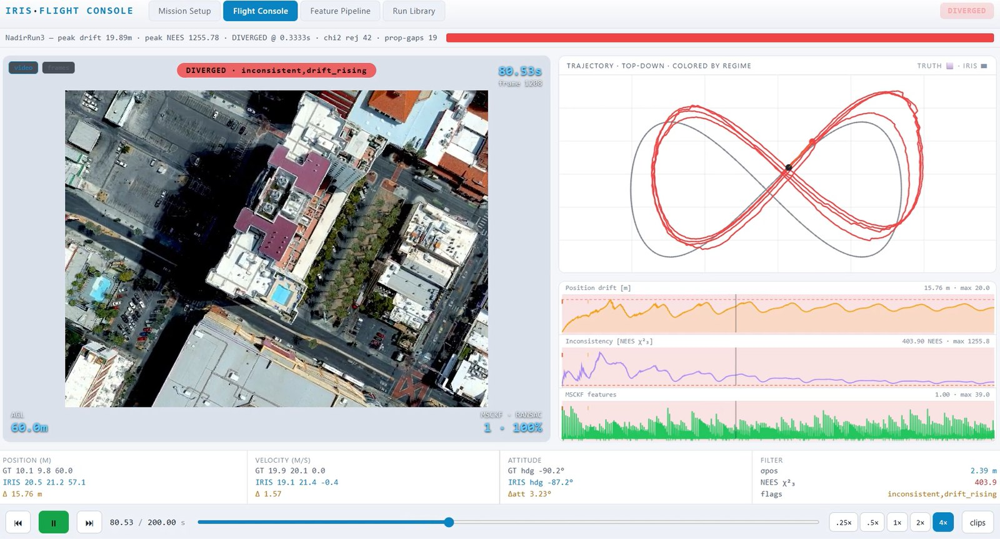
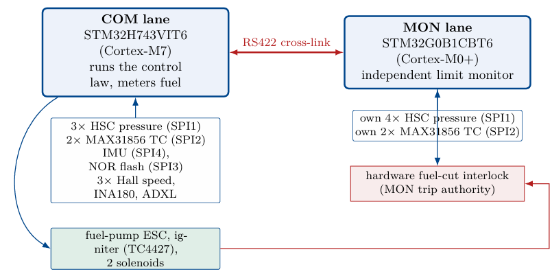

IRIS: A Simulator for GNSS-Denied Visual–Inertial Navigation
A simulator for testing how well a drone can navigate with only a camera and an IMU when GPS is unavailable: photoreal camera images (Unreal Engine and Cesium), IMU noise matched to a real sensor, and grading of both drift and whether the estimator’s reported uncertainty can be trusted. Drift stayed between 0.12 and 0.2 m over a 60 m test trajectory; validated against 11 self-flown flight tests.

Engine Controller (FADEC) for a Micro-Turbojet, Certified by GTRE
One processor runs the control law while a second, independent processor watches the engine limits and can cut the fuel. Tested against every failure case on a software model of the engine; India’s Gas Turbine Research Establishment (GTRE) certified the board for further deployment.
M-SWA: Multi-Modal Semantic Workbench Assistant
A robot arm you can talk to, in development: a vision–language model finds the object you mean, and the arm points at it with a laser, hands it over and remembers it. Heat and sound sensors answer questions such as whether a motor is overheating.

SkyNET: High-Lift Design Framework for Propeller-Blown Wings
Extended Prof. Drela’s airfoil design codes (MSES, XFOIL, LINDOP) to propeller-blown 3D wings, with flaps and slats in every combination and their full deployment motion, so the team could compare high-lift designs much faster than with CFD. Also worked on the composite structure of the first uSTOL prototype.

Blown-Wing STOL Study
Compared two blown-wing layouts for the company’s STOL aircraft, counter-circulation and distributed propulsion, by how much each delays stall and adds lift at low speed.

Rocket Combustion Instability (Mesh-Free CFD)
High-fidelity mesh-free CFD of liquid-propellant rocket-engine flows and chamber acoustic coupling; the seed of the IEEE Aerospace Conference abstract.

Drag Reduction System: Transient Moving-Mesh CFD
Arbitrary Lagrangian–Eulerian moving-mesh study of an actuated drag-reduction system, quantifying closed-versus-open aerodynamic loads.
Czerny–Turner Raman Spectrophotometer
A Raman spectrophotometer that detects organic biosignatures without damaging the sample.
Modular ATV Monocoque Chassis
A high-torsional-stiffness, mass-optimised monocoque with anti-Ackermann steering and a stress-checked geartrain.
Modular End Effector and 5-DOF Manipulator
A modular robot end effector combining a gripper, soil sampler, microscope, miniature spectrometer and environmental sensors in one unit, which switches between inspection, scanning and analysis on its own.